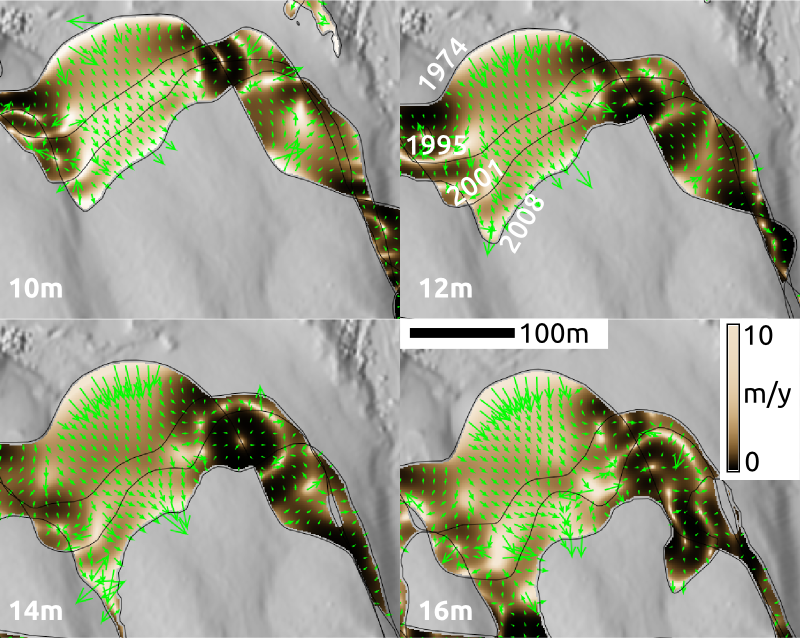
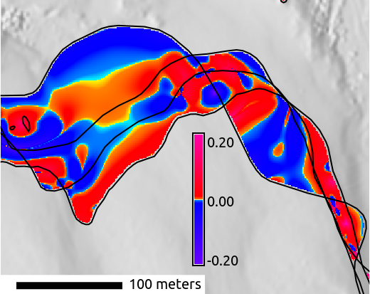
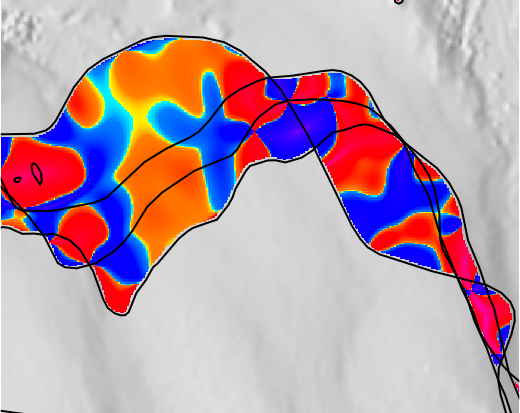

<section>
    <h2>Advantages</h2>
    <ul>
        <li>visual and quantitative technique
        <li>magnitude and direction of change
        <li>spatial distribution of rate of change
        <li>flexible detection of areas with changes
    </ul>
    <p>
    
</section>
<section>
    <h2>Current and future work</h2>
    <ul>
        <li>
            spatio-temporal interpolation
            <ul>
                <li>getting the intermediate contours
                <li>generating terrain from them
            </ul>
        </li>
        <li>relation of surface curvature to terrain temporal changes
        <li>combining results for different heights
    </ul>
    
    
</section>
<section>
    <h2>Possible applications</h2>
    <ul class="left">
        <li>
            analysis or model calibration
            <ul>
                <li>evolving shorelines
                <li>evolving islands
                <li>disease spread
                <li>fire spread
                <li>glacier melting
            </ul>
        </li>
        <li>
            terrain analysis
            <ul>
                <li>computing rates of change
                <li>computing rate of change of change
                <li>terrain terrain interpolation
            </ul>
        </li>
    </ul>
    <div class="right">
    <video data-autoplay muted loop width="100%">
         <source src="video/fire.mp4" type="video/mp4">
    </video>
        <p class="small">
            Simulation of wildfire in Shenandoah<br>
            Uses GRASS Web Publishing and GRASS Leaflet Publishing
        </p>
    </div>
    <aside class="notes">
        Application for online publication of animations
        without a need for server or specialized 3rd party service
    </aside>
</section>
